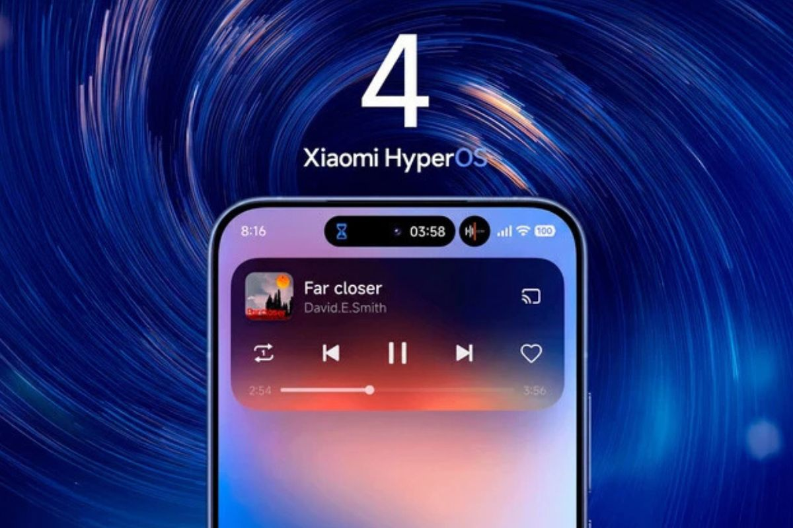

Xiaomi Libera novidades sobre a HyperOS 4
Publicado em 30 de setembro de 2026

A Xiaomi anunciou recentemente a chegada da HyperOS 4, a nova versão de seu sistema operacional. A atualização traz uma série de melhorias e recursos inovadores, incluindo uma interface mais intuitiva e suporte aprimorado para dispositivos de última geração.
Leia mais